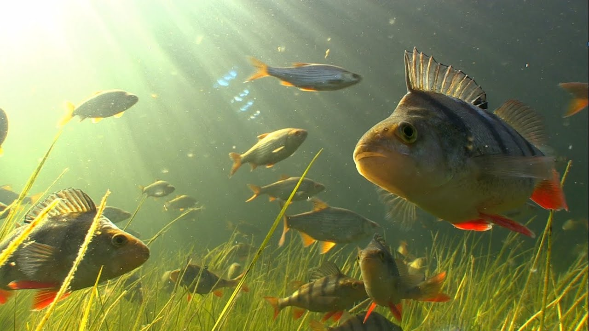

Карп
Большинство видов рода обитают на юге Китая и в Юго-Восточной Азии. Исключение составляют два вида. Первый — обыкновенный сазан (Cyprinus carpio), имевший естественный ареал, состоявший из двух частей: водоемы Понто-Каспийско-Аральского и дальневосточного регионов. Он был расселён в водоёмах Северной Америки, Австралии и Евразии за пределами естественного ареала, одомашнен, из него выведены породы карпа, разводимые в прудах. Второй — серебристый карп, завезенный в 1970-е годы в Канаду и США из озера Балхаш (Казахстан) и сильно размножившийся в отсутствие внешних врагов и отлова (из-за обилия костей американцы его не едят). В случае попадания серебристого карпа в Великие озера это грозит уничтожением промысловых рыб местных пород и исчезновением промыслового рыболовства, поэтому на Чикагском канале построен электрический барьер. Карпообразные (семейство Cyprinidae) традиционно объединяются с Characiformes, Siluriformes и Gymnotiformes в надпорядок Ostariophysi, поскольку эти группы имеют некоторые общие черты. К таким чертам относятся преимущественно пресноводный образ жизни и наличие веберовых косточек — анатомической структуры, образованной первыми пятью передними позвонками, а также соответствующими им рёбрами и нервными гребнями.
Щука
рыба семейства щуковых. Распространена в пресных водах Евразии и Северной Америки. Живёт обычно в прибрежной зоне, в водных зарослях, в непроточных или слабопроточных водах. Может также встречаться и в опреснённых частях морей, например в Финском, Рижском и Куршском заливах Балтийского моря, в Таганрогском заливе Азовского моря. Щука хорошо выдерживает кислую реакцию воды, может комфортно жить в водоёмах с pH 4,75. При снижении содержания кислорода до 3—2 мг/л наступает угнетение дыхания, поэтому в заморных водоёмах щука часто погибает. Щука может достигать относительно крупных размеров. Её средняя длина составляет около 40–55 см (16–22 дюйма), а максимальная зарегистрированная длина — до 150 см (59 дюймов), а максимальный вес — 28,4 кг (63 фунта). В настоящее время IGFA признаёт щуку весом 25 кг (55 фунтов), пойманную Лотаром Луисом на озере Грефферн в Германии 16 октября 1986 года, мировым рекордсменом по щуке. В Евразии щука вырастает до больших размеров, чем в Северной Америке, а в прибрежных регионах Евразии — больше, чем во внутренних. Щука получила своё название из-за сходства с древковым оружием, известным как пика (от среднеанглийского «pointed» — «заострённый»). Распространены и другие неофициальные прозвища. Такие названия, как «щука», «озёрная щука», «большая северная щука», «рыба-игла», «игла», «болотная акула-змея», «болотная змея» и «аллигатор».

Форель
Форель тесно связана с лососем и имеет схожий миграционный жизненный цикл. Большинство видов форели являются строго потамодромными, то есть проводят всю свою жизнь исключительно в пресноводных озёрах, реках и водно-болотных угодьях и мигрируют вверх по течению для нереста на мелководных гравийных участках небольших ручьёв. Вылупившиеся мальки и молодь форели, известные как алевтины и парры, остаются в верховьях и растут в течение нескольких лет, прежде чем мигрировать в более крупные водоёмы в качестве взрослых особей. Некоторые анадромные виды форели, такие как стальноголовый лосось (прибрежный подвид радужной форели) и морская форель (морской подвид кумжи), могут проводить в море до трёх лет своей взрослой жизни, прежде чем вернуться в пресноводные реки для нереста, как и лосось. Ручьевая форель и три других существующих вида североамериканской форели, несмотря на названия, на самом деле являются гольцами (или хариусами), которые также относятся к лососевым и тесно связаны с форелью и лососем. Форель относится к жирным видам рыб и является важным промысловым видом для человека. Будучи хищниками среднего размера, форели охотятся на более мелких водных животных, включая ракообразных, мелкую рыбу и головастиков, а сами, в свою очередь, являются важной добычей для многих диких животных, включая бурых медведей, выдр, енотов, хищных птиц, чаек, бакланов и зимородков, а также других крупных водных хищников. Выброшенные на берег останки форели также служат источником питательных веществ для падальщиков, детритофагов и прибрежной флоры, что делает форель ключевым видом в водных и наземных экосистемах.
Окунь
Общее названиепресноводной рыбы из рода Perca, который относится к семейству Percidae большого отряда окунеобразных. Название происходит от греческого: πέρκη, транслитерируется: perke, что означает типовой вид этого рода — европейского окуня (P. fluviatilis). Многие виды пресноводных промысловых рыб более или менее похожи на окуня, но относятся к другим родам. На самом деле, исключительно обитающего в солёной воде красного барабульку (который относится к другому отряду Acanthuriformes) часто называют «красным окунем», хотя по определению окунь — это пресноводный вид. Хотя многие рыбы называются окунями, чтобы считаться настоящим окунем, рыба должна принадлежать к семейству Percidae. Вид лучепёрых рыб из рода пресноводных окуней семейства окунёвых (Percidae). Речной окунь широко распространён в пресных водоёмах Европы и Северной Азии (до бассейна Колымы на востоке и водоёмов северных районов Ирана и Афганистана на юге), завезён в Африку, Австралию и Новую Зеландию. Ранее считалось, что ареал речного окуня включает и водоёмы Северной Америки, которые по современным представлениям населяет самостоятельный вид жёлтый окунь (Perca flavescens). Речной окунь относится к хищным рыбам. В рационе взрослого окуня значительную долю занимают другие пресноводные рыбы. Речной окунь предпочитает придерживаться равнинных водоёмов, его можно встретить в реках, озёрах, прудах, водохранилищах и даже в солоноватых участках морей. Нерест у речного окуня происходит ранней весной. Самка окуня откладывает икринки в форме длинной (до 1 м) студенистой ленты. Окунь — популярный объект любительского рыболовства, в отдельных водоёмах имеет важное промысловое значение.
Судак
также называемый судак-щука, жёлтая щука, жёлтый судак или жёлтый окунь, — пресноводная окунеобразная рыба, обитающая на большей части территории Канады и в Северной части Соединённых Штатов. Это североамериканский близкий родственник европейского судака, также известного как берш. Супового окуня иногда называют жёлтым окунем, чтобы отличать его от синего окуня, который когда-то встречался в южных регионах Онтарио и Квебека, но в настоящее время считается вымершим. Однако недавний генетический анализ сохранившегося (замороженного) образца «синего окуня» позволяет предположить, что синий и жёлтый окуни были просто фенотипами одного и того же вида и не заслуживают отдельной таксономической классификации. В некоторых частях своего ареала в англоязычной Канаде судак известен как пикероль, хотя эта рыба не имеет отношения к настоящим пикеролям, которые относятся к семейству Esocidae. В британском английском его также иногда называют дори (а его распространённое французское название — doré, что означает золотой или позолоченный), хотя это название также используется для обозначения различных других видов. Судак демонстрирует значительную вариативность в зависимости от водосборного бассейна. В целом, рыба в пределах одного водосборного бассейна довольно похожа и генетически отличается от рыбы в соседних водосборных бассейнах. Этот вид искусственно разводился более века и был посажен поверх существующих популяций или интродуцирован в водоёмы, где этот вид не водится в естественных условиях, что иногда приводило к снижению общей генетической обособленности популяций.